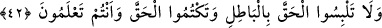
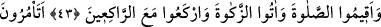
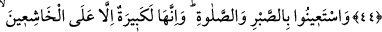
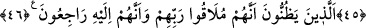
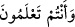

SABIR VE NAMAZ
42. Bilerek hakkı bâtıl ile karıştırmayın, hakkı gizlemeyin.
43. Namazı tam kılın, zekâtı hakkıyla verin, rükû edenlerle beraber rükû edin.
44. (Ey bilginler!) Sizler Kitab’ı (Tevrât’ı) okuduğunuz (gerçekleri bildiğiniz)
halde, insanlara iyiliği emredip kendinizi unutuyor musunuz? Aklınızı kullanmıyor
musunuz?
45. Sabır ve namaz ile Allah’dan yardım isteyin. Şüphesiz o (sabır ve namaz),
Allah’a saygıdan kalbi ürperenler dışında herkese zor ve ağır gelen bir görevdir.
46. Onlar, kesinlikle Rablerine kavuşacaklarını ve O’na döneceklerini düşünen
ve bunu kabûllenen kimselerdir.
Âyet cümle olarak kendinden önceki cümleye atfolunmuştur. “Lebs” ( __WORD__ )
kelimesini üstün harekeli olarak okursak “karıştırmak” mânâsına gelir. Âyet o zaman şu
mânâları ifâde eder: Ey Yahûdîler! Benim indirdiğim dosdoğru kitabı tahrif ederek,
kendi uydurduğunuz bâtılla karıştırmayın veya Tevrât’ın içine yazdığınız bâtıl şeylerin
Tevrât’la karışmasına sebeb olmayın. “Hakk’ı gizlemeyi ve onu bâtılla karıştırmayı
birlikte yapmayın”. Hakk’ı gizlemek ve onu bâtılla karıştırmak farklı şeylerdir. Birisi
gizlemek, öbürü değiştirmektir. Yahûdîler Tevrât’ta olduğu halde: “Biz kitabımızda
Muhammed’in vasıfları hakkında bir şey bulamadık” demekteydiler. “Bildiğiniz halde”
( __WORD__ ) cümlesi iki mânâya gelir. Birincisi “siz hakkı gizlediğinizi ve onu bâtılla
karıştırdığınızı bildiğiniz halde Hz. Muhammed’i yalanlamayın”dır. İkinci mânâ ise:
“Siz Hz. Muhammed’in gerçekten peygamber olduğunu bildiğiniz halde onu
yalanlamayın”dır. “Bilerek böyle yapmayın” denilmekle âlimlerin yaptığı işin ne kadar
çirkin olduğu anlatılmıştır. Çünkü câhil olanlar mâzûrdur.
et-Teysîr adlı eserde zikredildiğine göre âyetteki hıtâbın her sınıftan müslümana
yönelik olması câizdir. O zaman âyet, âdetâ şöyle demektedir: “Ey sultânlar ve
idâreciler! Adâletle zulmü birbirine karıştırmayın. Ey hâkimler! Doğruluğu rüşvetle
bozmayın!” Bunu her fırkaya teşmîl etmek mümkündür.